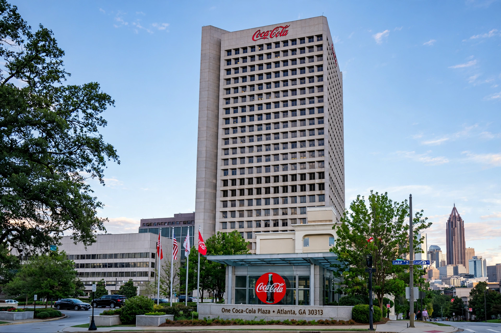

The Coca-Cola Company is an American multinational corporation founded in 1892. It manufactures, sells and markets soft drinks including its flagship Coca-Cola, invented in 1886 by pharmacist John Stith Pemberton in Atlanta, Georgia. The company is the world's largest beverage company, selling products in more than 200 countries.

Asa Candler bought the Coca-Cola formula from Pemberton's estate and built a national brand through bottling contracts. Under Robert Woodruff the company expanded globally, supplying U.S. troops in World War II and planting bottlers worldwide. Later launches included Diet Coke (1982), the ill-fated New Coke (1985), and acquisitions in juices, waters, teas and coffees such as Costa Coffee (2019).
Coca-Cola sells concentrate to franchised bottlers who produce and distribute finished drinks. The company faces criticism over sugar and health, plastic waste and water use, and responds with low-sugar lines, recycling pledges and a 'total beverage company' strategy.